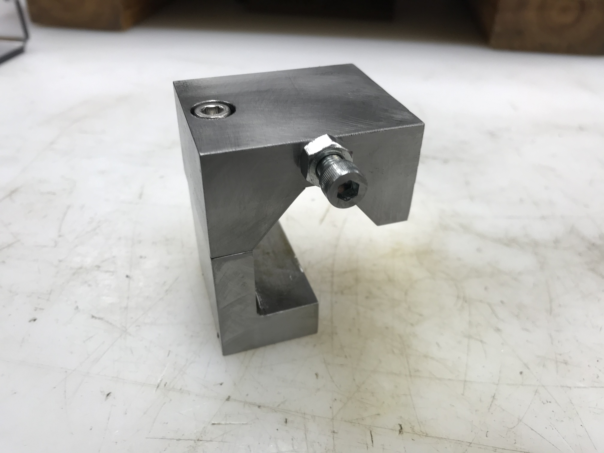
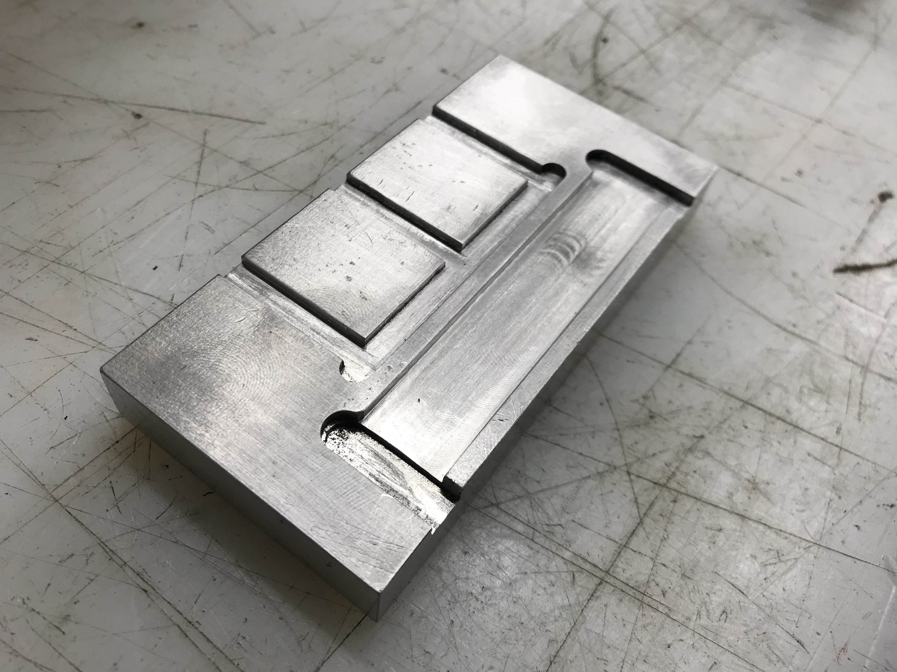

During my internship at Dometic, I gained valuable experience on the milling and lathe machines by developing prototype testing jigs out of steel and aluminum. On the side, I took on a personal project to design and manufacture a fine tune lathe adjustment block.

Manufactured lathe adjustment block
This clamping device was designed to be slidable along the x-axis of the lathe machine and it was a 2 piece steel assembly joined with an M5 cap screw to easily clamp or slide as needed. I began by identifying the spatial and geometric constraints of the system and modelling it on Creo (3D modelling software) to develop an engineering drawing.I took these steps in the manufacturing process:
- Pick up scrap steel and cut it to a reasonable size with the bandsaw. Milling steel is a longer process than aluminum due to its great strength and hardness. I made sure to pick up a scrap piece that had three flat faces which would greatly help in the leveling process.
- I completed basic conventional milling techniques to cut down material and finished off each face by climb milling the last 5 thousandths of each face. This would allow superior surface finish on the end product.
- For the angled piece, I set up a series of clamps and angled brackets to hold the steel in place during milling.
- After approximately 10-15 hours of machining, I used a tap and die set to insert two M5 cap screws to the assembly. One screw would be used to clamp the block to the lathe rail while the other screw would be used as a fine adjustment knob that would act as a stopper to the x-axis feeding block on the lathe.
Sliding and clamping fit testing

Other work: Motor magnet testing jig